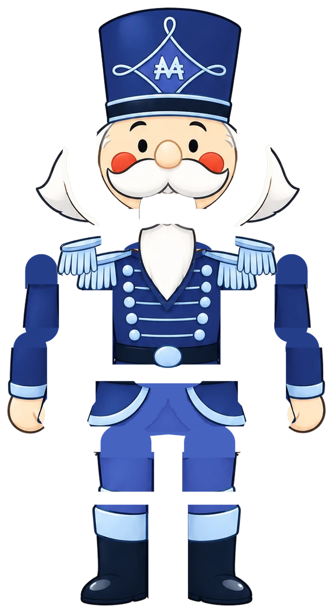

Un baile de cinco segundos en bucle para las columnas de pantalla de una activación navideña en tienda. El personaje se anima con las piezas de su propia ilustración: se mueve igual que en el diseño aprobado, sin redibujarlo.
Final, rig con huesos, silueta y curvas. En las curvas, la línea discontinua es la clave que se anima y la línea de color es lo que hace el resorte: así se ve el sobre-impulso y el asentamiento que dan el carácter cartoon. La barba no tiene claves; la mueve la física.
Diez tiempos a 120 BPM. Cada bloque abre con una anticipación y cierra en una pose que lleva a la siguiente.
La vista frontal de la hoja de personaje se separó en piezas. Las zonas que el dibujo original tapa (bajo la barba, bajo los brazos, la parte alta del pantalón) se rellenaron con los colores del propio dibujo para que nada se abra al moverse.

Huesos principalesHombros, codos, cadera, torso y cabeza. Se animan por claves y pasan por resortes que añaden el rebote.
Física secundariaBarba, mechones, faldones y charreteras. Reaccionan a la aceleración y al giro de su pieza padre.
Piernas con cinemática inversaLos pies quedan fijos en el suelo; las rodillas se doblan solas cuando baja la cadera.
Capa de expresionesPárpados con cierre progresivo, ojos felices, guiño y boca que ríe al ritmo.